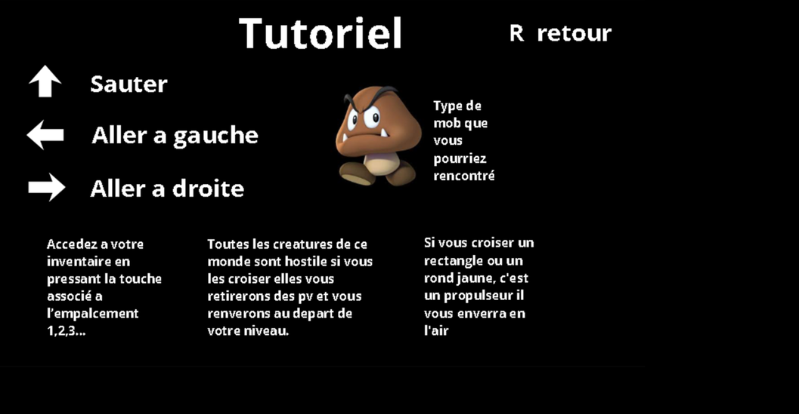
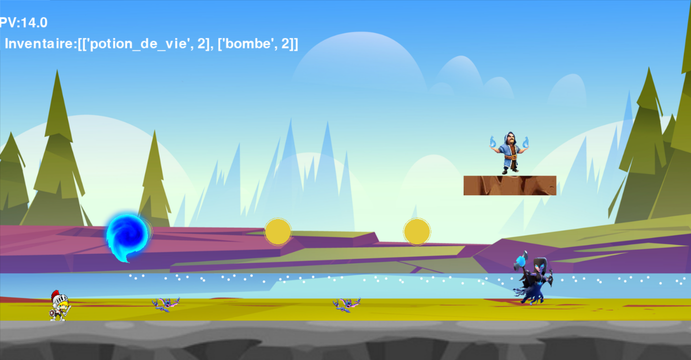
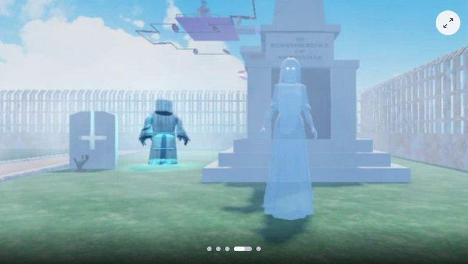
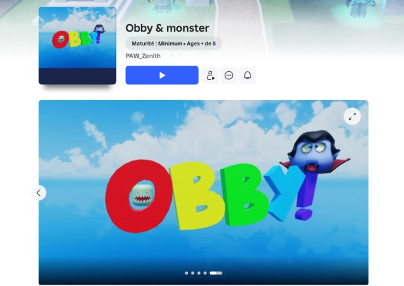
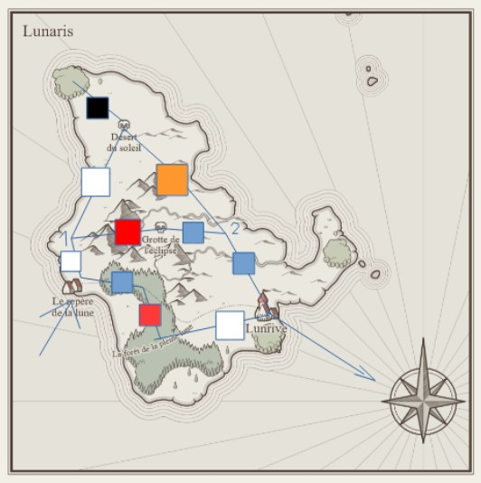
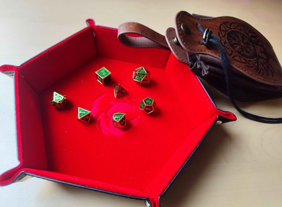
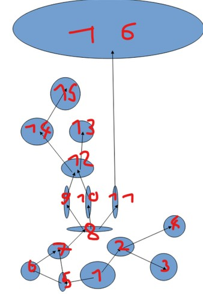
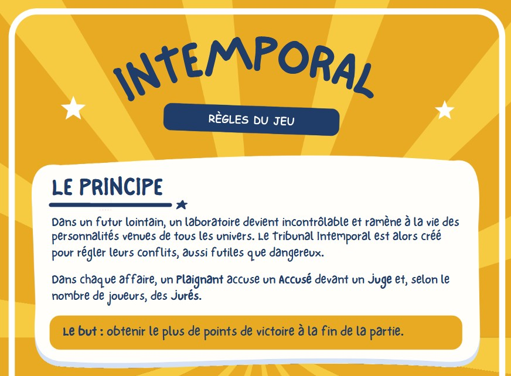
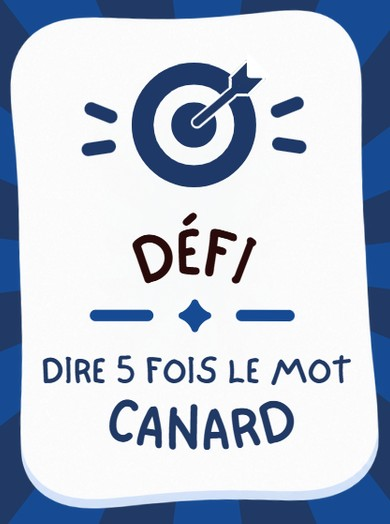

Je m'appelle Ewen le Doublet, ayant eu le bac avec mention et les spécialitées NSI Maths en terminale ainsi que SI en première, actuellement étudiant à l'IIM en première année je suis passioné par le dévellopement et le jeu vidéo je souhaite pour l'instant aller en deuxième année en Game Design, mon projet professionel est de devenir Game Designer et de créer mes propres jeux vidéos, devenir dévelopeur indépendant est une option que j'envisage mais je reste ouvert au travail dans des entreprises du domaines. N'hésitez pas à me contacter si mon profil vous intéresse ou pour plus d'informations :)
En terminale au lycée les Rimains j'ai du faire un jeu vidéo en python comme projet pour la fin du moi c'était un projet en binome et j'ai géré l'intégralité de l'aspect gameplay et des idées du jeu, j'ai aussi fait tout le code utilisé pour le jeu tandis que mon binome a géré tout les menus et leurs Design


Durant ma terminale j'ai crée un jeu roblox, un obby plus précisement, il reste simple afin de rester un obby classique, cependant j'ai modifié et fait des codes afin de compléxifier certains aspects du hobby tout en lui ajoutant un thème graphique afin de lui donner une cohérence


J'ai crée un jeu de rôle sur le thème de One Piece, j'y ai joué avec des amis en tant que maitre de jeu, nous l'avons finis au bout de 10 sessions, ce qui nous a pris toute l'année de terminale dans ce jeu de rôle ils incarnaient tous des personnages différents avec une histoire et un but unique, durant l'aventure ils ont découverts des secrets que le monde leurs cachait et ils ont finis par venger l'espèce d'un des joueurs qui avait été décimée par un dieu maléfique


Je suis actuellement entrain de créer un nouveau jeu de rôle cette fois sur le thème de la magie, j'y jouerai en tant que mettre de jeu avec les mêmes amis sauf 1 qui et parti et un autre qui est venu ils vivront commes des étudiant d'une académie de magie sauf que ce qu'ils ne savent pas c'est qu'un d'entre eux est en réalité un démon sorti partiellement de son sceau et qui cherche à s'en libérer totalement

je suis actuellement entrain de faire un jeu de société nommé Intemporal, nous sommes trois à le faire avec Louis Gaston-Baya et Maxime Pezzotta, le jeu consiste en un jeu d'ambiance ou les joueurs incarnent un juge des jurés un accusé et un plaignant, le juge doit trancher sur l'affaire et les deux joueurs doivent en plus de convaincre le juge réussir à faire des défis sans se faire repérer par les jurés qui eux doivent trouver les défis de l'accusé et du plaignant, l'affaire et l'identité du plaignant et de l'accusé étant aléatoire les parties deviennent totalement loufoque et à mourrir de rire

